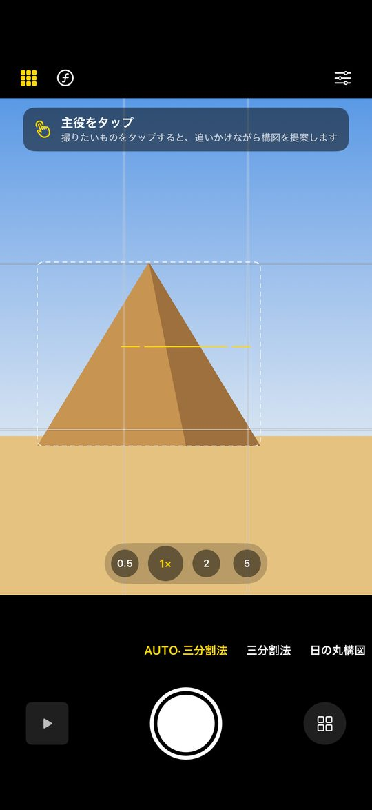
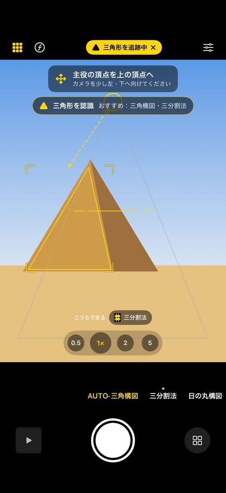
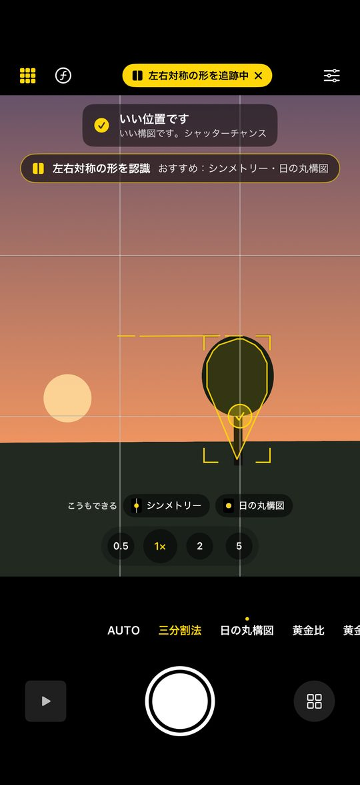
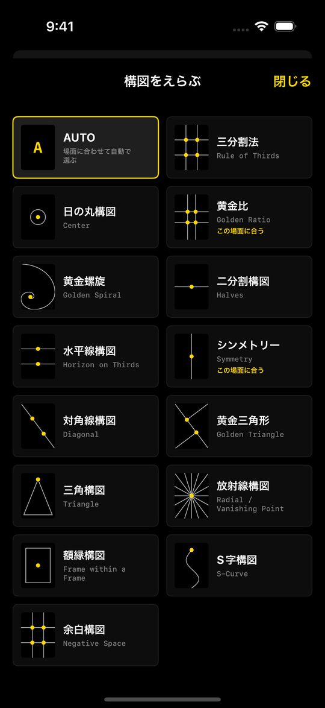
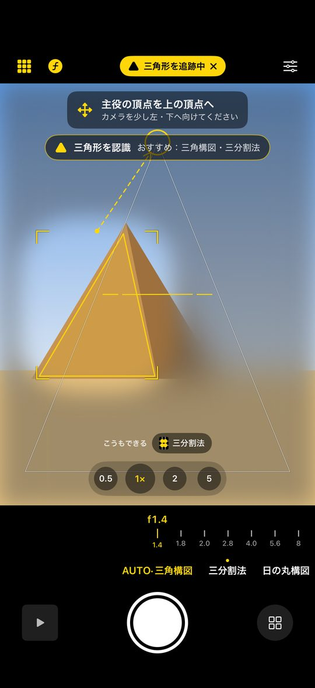
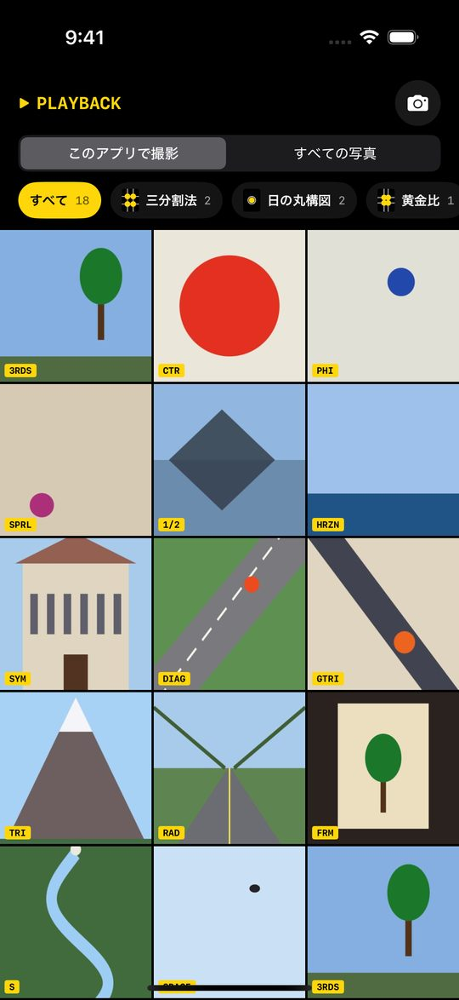

撮りたいものをタップするだけ。主役の形を読み取って、
14種類の構図から合うものを教えるカメラ。
Tap what you want to shoot. KOZU reads the subject's shape
and guides you to one of 14 compositions that fits.
構図の知識がなくても大丈夫。カメラが「どこに置けばいいか」を教えてくれます。No composition know-how needed. The camera shows you where things should go.

点線の枠は、カメラが見つけた主役の候補。撮りたいものをタップすると追いかけます。Dotted boxes are candidate subjects. Tap one and KOZU follows it.

ピラミッドなら三角形 → 三角構図。形に合う構図を選んで、矢印で案内します。A pyramid is a triangle, so it suggests a triangle composition and points the way.

主役が黄色の丸に重なるとチェックが付き、振動でお知らせ。When the subject reaches the yellow circle, a check and a haptic tap say it's time.
下の被写体をクリック（タップ）してみてください。アプリと同じように形を認識して、カメラが構図の位置まで動きます。Click (or tap) a subject below. Just like the app, it recognizes the shape and the camera moves into a composition that fits.
白い線がガイド線、黄色の丸が主役を置く場所。アプリのファインダーにも、この線が重なります。White lines are the guides; yellow circles show where the subject goes. The same guides appear in the app's viewfinder.
画面はシンプル。構図の切り替えは、下の文字を横にスクロールするだけ。A clean layout. Switch compositions by swiping the strip at the bottom.



横に構えると、ガイドも文字も横向きに。方向の案内も構えた向きで。Hold it sideways and the guides and tips turn with you.
f1.4〜f16 を選んで、深度を使った本物のぼけで保存（対応する iPhone）。Choose f/1.4–f/16 and save with depth-based blur (on supported iPhones).
0.5× から望遠まで。長押しで出るダイヤルでデジタルズームも。From 0.5× to telephoto, plus a press-and-hold dial for digital zoom.
傾きをお知らせ。主役が小さいときは、寄った後の範囲を点線で。Tilt warnings, and a dotted frame showing where zooming in would land.
撮った写真を構図ごとに自動で分類。アルバム全体も切り替えて見られます。Photos sorted by composition, for KOZU shots or your whole library.
好きな色で使えます。Make it yours.
無料です。App内課金も広告もありません。Yes. No in-app purchases and no ads.
背景とはっきり分かれている被写体ほど正確です。主役の真ん中あたりをタップしてみてください。認識できないときは「ひとかたまり」として三分割法などを提案します。Subjects that stand out from the background work best. Try tapping near the middle of the subject. If no shape is found, KOZU treats it as a single mass and suggests the rule of thirds and similar.
背景ぼかしには、深度を記録できるカメラ（デュアルカメラ以上の iPhone）が必要です。Background blur needs a camera that can record depth (iPhones with two or more rear cameras).
iOS 18 以上の iPhone です。iPhone with iOS 18 or later.